|
|
Boost Statechart 库Tutorial |
本教程较早版本的日文翻译见 http://prdownloads.sourceforge.jp/jyugem/7127/fsm-tutorial-jp.pdf. 由 Mitsuo Fukasawa 慷慨提供.
Boost Statechart 库是一个框架, 让你可以把 UML 状态图快速转换为可执行的 C++ 代码, 而无需使用代码生成器. 得益于对几乎所有 UML 特性的支持, 这一转换直截了当, 得到的 C++ 代码是状态图几乎无冗余的文字描述.
本教程设计为按顺序阅读. 初次使用者应当从头开始读起, 一旦已掌握手头任务所需的内容即可停止. 具体而言:
我们将用最简单的程序来迈出第一步. 该状态图...
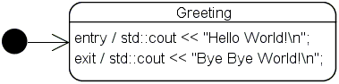
...用以下代码实现:
#include <boost/statechart/state_machine.hpp> #include <boost/statechart/simple_state.hpp> #include <iostream> namespace sc = boost::statechart; // We are declaring all types asstructs only to avoid having to // typepublic. If you don't mind doing so, you can just as well // useclass.// We need to forward-declare the initial state because it can // only be defined at a point where the state machine is // defined. struct Greeting; // Boost.Statechart makes heavy use of the curiously recurring // template pattern. The deriving class must always be passed as // the first parameter to all base class templates. // // The state machine must be informed which state it has to // enter when the machine is initiated. That's why Greeting is // passed as the second template parameter. struct Machine : sc::state_machine< Machine, Greeting > {}; // For each state we need to define which state machine it // belongs to and where it is located in the statechart. Both is // specified with Context argument that is passed to // simple_state<>. For a flat state machine as we have it here, // the context is always the state machine. Consequently, // Machine must be passed as the second template parameter to // Greeting's base (the Context parameter is explained in more // detail in the next example). struct Greeting : sc::simple_state< Greeting, Machine > { // Whenever the state machine enters a state, it creates an // object of the corresponding state class. The object is then // kept alive as long as the machine remains in the state. // Finally, the object is destroyed when the state machine // exits the state. Therefore, a state entry action can be // defined by adding a constructor and a state exit action can // be defined by adding a destructor. Greeting() { std::cout << "Hello World!\n"; } // entry ~Greeting() { std::cout << "Bye Bye World!\n"; } // exit }; int main() { Machine myMachine; // The machine is not yet running after construction. We start // it by calling initiate(). This triggers the construction of // the initial state Greeting myMachine.initiate(); // When we leave main(), myMachine is destructed what leads to // the destruction of all currently active states. return 0; }
程序在退出前打印 Hello World! 和 Bye Bye World!.
接下来, 我们将用一个状态机来建模一个简单的机械秒表. 这类秒表通常有两个按钮:
以及两个状态:
以下是在 UML 中指定它的一种方式:
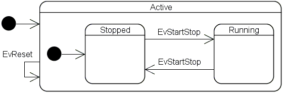
两个按钮用两个事件建模. 此外, 我们还定义了必要的状态和初始状态. 以下代码是起点, 后续代码片段必须插入其中:
#include <boost/statechart/event.hpp>
#include <boost/statechart/state_machine.hpp>
#include <boost/statechart/simple_state.hpp>
namespace sc = boost::statechart;
struct EvStartStop : sc::event< EvStartStop > {};
struct EvReset : sc::event< EvReset > {};
struct Active;
struct StopWatch : sc::state_machine< StopWatch, Active > {};
struct Stopped;
// The simple_state class template accepts up to four parameters:
// - The third parameter specifies the inner initial state, if
// there is one. Here, only Active has inner states, which is
// why it needs to pass its inner initial state Stopped to its
// base
// - The fourth parameter specifies whether and what kind of
// history is kept
// Active is the outermost state and therefore needs to pass the
// state machine class it belongs to
struct Active : sc::simple_state<
Active, StopWatch, Stopped > {};
// Stopped and Running both specify Active as their Context,
// which makes them nested inside Active
struct Running : sc::simple_state< Running, Active > {};
struct Stopped : sc::simple_state< Stopped, Active > {};
// Because the context of a state must be a complete type (i.e.
// not forward declared), a machine must be defined from
// "outside to inside". That is, we always start with the state
// machine, followed by outermost states, followed by the direct
// inner states of outermost states and so on. We can do so in a
// breadth-first or depth-first way or employ a mixture of the
// two.
int main()
{
StopWatch myWatch;
myWatch.initiate();
return 0;
}
这可以编译, 但还没有任何可观察的行为.
目前我们只用一种反应: 转换. 我们 插入以下代码的粗体部分:
#include <boost/statechart/transition.hpp>
// ...
struct Stopped;
struct Active : sc::simple_state< Active, StopWatch, Stopped >
{
typedef sc::transition< EvReset, Active > reactions;
};
struct Running : sc::simple_state< Running, Active >
{
typedef sc::transition< EvStartStop, Stopped > reactions;
};
struct Stopped : sc::simple_state< Stopped, Active >
{
typedef sc::transition< EvStartStop, Running > reactions;
};
// A state can define an arbitrary number of reactions. That's
// why we have to put them into an mpl::list<> as soon as there
// is more than one of them
// (see Specifying multiple reactions for a state).
int main()
{
StopWatch myWatch;
myWatch.initiate();
myWatch.process_event( EvStartStop() );
myWatch.process_event( EvStartStop() );
myWatch.process_event( EvStartStop() );
myWatch.process_event( EvReset() );
return 0;
}
现在所有状态和所有转换都已就位, 并且向秒表发送了一些事件. 机器尽职地做出我们预期的转换, 但还没有执行任何动作.
接下来, 我们让秒表真正测量时间. 根据秒表所处的状态, 需要不同的变量:
我们注意到, 无论机器处于什么状态, 都需要流逝时间变量. 此外, 当我们向机器发送 EvReset 事件时, 该变量应重置为 0. 另一个变量只在机器处于 Running 状态时需要. 每当进入 Running 状态时, 它应被设为系统时钟的当前时间. 退出时, 我们只需用当前系统时钟时间减去启动时间, 并把结果加到流逝时间上.
#include <ctime>
// ...
struct Stopped;
struct Active : sc::simple_state< Active, StopWatch, Stopped >
{
public:
typedef sc::transition< EvReset, Active > reactions;
Active() : elapsedTime_( 0.0 ) {}
double ElapsedTime() const { return elapsedTime_; }
double & ElapsedTime() { return elapsedTime_; }
private:
double elapsedTime_;
};
struct Running : sc::simple_state< Running, Active >
{
public:
typedef sc::transition< EvStartStop, Stopped > reactions;
Running() : startTime_( std::time( 0 ) ) {}
~Running()
{
// Similar to when a derived class object accesses its
// base class portion, context<>() is used to gain
// access to the direct or indirect context of a state.
// This can either be a direct or indirect outer state
// or the state machine itself
// (e.g. here: context< StopWatch >()).
context< Active >().ElapsedTime() +=
std::difftime( std::time( 0 ), startTime_ );
}
private:
std::time_t startTime_;
};
// ...
机器现在能测量时间了, 但我们还不能从主程序中取回它.
此时, 状态局部存储 (仍是一个相对少为人知的特性) 的优点可能尚未显现. 常见问题条目 状态局部存储 (state-local storage) 到底好在哪里? 通过比较本 StopWatch 与一个不使用状态局部存储的版本, 试图更详细地解释这些优点.
要取回测得的时间, 我们需要一种把状态信息从机器中取出的机制. 按当前机器设计有两种办法. 为简单起见, 我们使用效率较低的那种: state_cast<>() (StopWatch2.cpp 展示了稍复杂的替代方案). 顾名思义, 其语义与 dynamic_cast 非常相似. 例如, 当我们调用 myWatch.state_cast< const Stopped & >() 且机器当前处于 Stopped 状态时, 会得到指向 Stopped 状态的引用; 否则抛出 std::bad_cast. 我们可以利用这一功能实现一个返回流逝时间的 StopWatch 成员函数. 不过, 与其询问机器处于哪个状态、然后切换到不同的流逝时间计算, 我们把计算放进 Stopped 和 Running 状态, 并用一个接口来取回流逝时间:
#include <iostream>
// ...
struct IElapsedTime
{
virtual double ElapsedTime() const = 0;
};
struct Active;
struct StopWatch : sc::state_machine< StopWatch, Active >
{
double ElapsedTime() const
{
return state_cast< const IElapsedTime & >().ElapsedTime();
}
};
// ...
struct Running : IElapsedTime,
sc::simple_state< Running, Active >
{
public:
typedef sc::transition< EvStartStop, Stopped > reactions;
Running() : startTime_( std::time( 0 ) ) {}
~Running()
{
context< Active >().ElapsedTime() = ElapsedTime();
}
virtual double ElapsedTime() const
{
return context< Active >().ElapsedTime() +
std::difftime( std::time( 0 ), startTime_ );
}
private:
std::time_t startTime_;
};
struct Stopped : IElapsedTime,
sc::simple_state< Stopped, Active >
{
typedef sc::transition< EvStartStop, Running > reactions;
virtual double ElapsedTime() const
{
return context< Active >().ElapsedTime();
}
};
int main()
{
StopWatch myWatch;
myWatch.initiate();
std::cout << myWatch.ElapsedTime() << "\n";
myWatch.process_event( EvStartStop() );
std::cout << myWatch.ElapsedTime() << "\n";
myWatch.process_event( EvStartStop() );
std::cout << myWatch.ElapsedTime() << "\n";
myWatch.process_event( EvStartStop() );
std::cout << myWatch.ElapsedTime() << "\n";
myWatch.process_event( EvReset() );
std::cout << myWatch.ElapsedTime() << "\n";
return 0;
}
要实际看到时间被测量, 你可能想单步执行 main() 中的语句. StopWatch 示例把这个程序扩展成了一个交互式控制台应用.
到目前为止一切顺利. 然而, 上述做法有一些限制:
state_machine::initiate() 的位置, 就会发生一系列模板实例化, 只有当机器的每一个状态的完整声明都已知时才能成功. 也就是说, 状态机的整个布局必须实现在单个翻译单元中 (动作可以分开编译, 但这里这不重要). 对于更大 (也更接近真实) 的状态机, 这带来以下限制: 所有这些限制都可以用自定义反应克服. 警告: 自定义反应很容易被滥用到引发未定义行为的程度. 使用前请仔细研读文档!
假设您的公司想开发一台数码相机. 该相机有以下控制装置:
EvShutterHalf、EvShutterFull 和 EvShutterReleasedEvConfig 事件表示相机的一个用例是: 摄影师可以在配置模式的 任何地方半按快门, 相机立即进入拍摄模式. 以下状态图是实现该行为的一种方式:
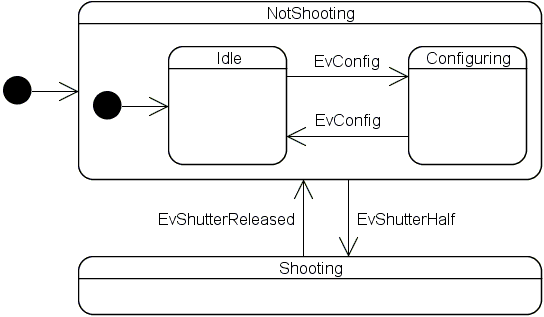
Configuring 和 Shooting 状态将包含大量嵌套状态, 而 Idle 状态相对简单. 因此决定组建两个团队: 一个实现拍摄模式, 另一个实现配置模式. 两个团队已就拍摄团队用于获取配置设置的接口达成一致. 我们希望确保两个团队能以尽可能小的干扰工作. 于是, 我们把这两个状态放进各自的翻译单元, 使 Configuring 状态内部的机器布局更改永远不会导致 Shooting 状态内部运作的重新编译, 反之亦然.
与前面的示例不同, 这里给出的摘录常常概述实现同一效果的不同选项. 因此代码往往与 Camera 示例代码不同. 注释标出了属于这种情况的部分.
Camera.hpp:
#ifndef CAMERA_HPP_INCLUDED
#define CAMERA_HPP_INCLUDED
#include <boost/statechart/event.hpp>
#include <boost/statechart/state_machine.hpp>
#include <boost/statechart/simple_state.hpp>
#include <boost/statechart/custom_reaction.hpp>
namespace sc = boost::statechart;
struct EvShutterHalf : sc::event< EvShutterHalf > {};
struct EvShutterFull : sc::event< EvShutterFull > {};
struct EvShutterRelease : sc::event< EvShutterRelease > {};
struct EvConfig : sc::event< EvConfig > {};
struct NotShooting;
struct Camera : sc::state_machine< Camera, NotShooting >
{
bool IsMemoryAvailable() const { return true; }
bool IsBatteryLow() const { return false; }
};
struct Idle;
struct NotShooting : sc::simple_state<
NotShooting, Camera, Idle >
{
// With a custom reaction we only specify that we might do
// something with a particular event, but the actual reaction
// is defined in the react member function, which can be
// implemented in the .cpp file.
typedef sc::custom_reaction< EvShutterHalf > reactions;
// ...
sc::result react( const EvShutterHalf & );
};
struct Idle : sc::simple_state< Idle, NotShooting >
{
typedef sc::custom_reaction< EvConfig > reactions;
// ...
sc::result react( const EvConfig & );
};
#endif
Camera.cpp:
#include "Camera.hpp"
// The following includes are only made here but not in
// Camera.hpp
// The Shooting and Configuring states can themselves apply the
// same pattern to hide their inner implementation, which
// ensures that the two teams working on the Camera state
// machine will never need to disturb each other.
#include "Configuring.hpp"
#include "Shooting.hpp"
// ...
// not part of the Camera example
sc::result NotShooting::react( const EvShutterHalf & )
{
return transit< Shooting >();
}
sc::result Idle::react( const EvConfig & )
{
return transit< Configuring >();
}
注意: 任何对 simple_state<>::transit<>() 或 simple_state<>::terminate() 的调用 (见 参考) 都必然析构状态对象 (类似 delete this;)! 也就是说, 在这些调用之后执行的代码可能引发未定义行为! 这就是为什么这些函数只应作为 return 语句的一部分被调用.
Shooting 状态的内部运作可以如下:
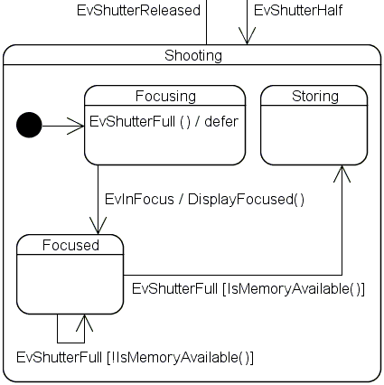
当用户半按快门时, 进入 Shooting 及其内层初始状态 Focusing. 在 Focusing 的进入动作中, 相机指示对焦电路把被摄物对焦. 对焦电路随即相应移动镜头, 并在完成后发送 EvInFocus 事件. 当然, 用户可能在镜头还在移动时全按快门. 若不采取任何预防措施, 产生的 EvShutterFull 事件将直接丢失, 因为 Focusing 状态没有为该事件定义反应. 结果是, 用户必须在相机完成对焦后再次全按快门. 为防止这种情况, EvShutterFull 事件在 Focusing 状态内被延迟. 这意味着该类型的所有事件都存储在一个单独的队列中, 当 Focusing 状态退出时, 该队列被倒空进主队列.
struct Focusing : sc::state< Focusing, Shooting >
{
typedef mpl::list<
sc::custom_reaction< EvInFocus >,
sc::deferral< EvShutterFull >
> reactions;
Focusing( my_context ctx );
sc::result react( const EvInFocus & );
};
从 Focused 状态出发的两个转换由同一事件触发, 但它们具有互斥的守卫. 下面是一个恰当的自定义反应:
// not part of the Camera example
sc::result Focused::react( const EvShutterFull & )
{
if ( context< Camera >().IsMemoryAvailable() )
{
return transit< Storing >();
}
else
{
// The following is actually a mixture between an in-state
// reaction and a transition. See later on how to implement
// proper transition actions.
std::cout << "Cache memory full. Please wait...\n";
return transit< Focused >();
}
}
自定义反应当然也可以直接在状态声明中实现, 这通常更便于浏览.
接下来, 我们将用一个守卫来阻止转换, 并让外层状态在电量不足时对该事件作出反应:
Camera.cpp:
// ...
sc::result NotShooting::react( const EvShutterHalf & )
{
if ( context< Camera >().IsBatteryLow() )
{
// We cannot react to the event ourselves, so we forward it
// to our outer state (this is also the default if a state
// defines no reaction for a given event).
return forward_event();
}
else
{
return transit< Shooting >();
}
}
// ...
Focused 状态的自转换也可以实现为 状态内反应, 只要 Focused 没有任何进入或退出动作, 效果就相同:
Shooting.cpp:
// ...
sc::result Focused::react( const EvShutterFull & )
{
if ( context< Camera >().IsMemoryAvailable() )
{
return transit< Storing >();
}
else
{
std::cout << "Cache memory full. Please wait...\n";
// Indicate that the event can be discarded. So, the
// dispatch algorithm will stop looking for a reaction
// and the machine remains in the Focused state.
return discard_event();
}
}
// ...
由于该状态内反应带有守卫, 我们需要在这里使用 custom_reaction<>. 对于无守卫的状态内反应, 应使用 in_state_reaction<> 以获得更好的代码可读性.
作为每次转换的效果, 动作按以下顺序执行:
示例:
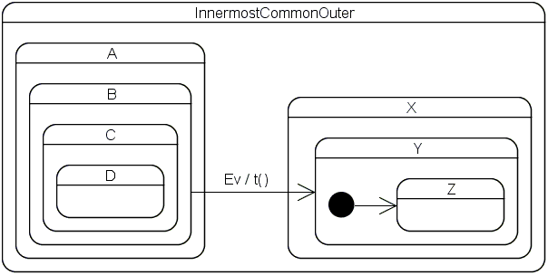
此处顺序如下: ~D(), ~C(), ~B(), ~A(), t(), X(), Y(), Z(). 因此转换动作 t() 在 InnermostCommonOuter 状态的上下文中执行, 因为源状态已经离开 (被析构), 而目标状态尚未进入 (被构造).
在 Boost.Statechart 中, 转换动作可以是 任何公共外层上下文的成员. 也就是说, Focusing 与 Focused 之间的转换可以这样实现:
Shooting.hpp:
// ...
struct Focusing;
struct Shooting : sc::simple_state< Shooting, Camera, Focusing >
{
typedef sc::transition<
EvShutterRelease, NotShooting > reactions;
// ...
void DisplayFocused( const EvInFocus & );
};
// ...
// not part of the Camera example
struct Focusing : sc::simple_state< Focusing, Shooting >
{
typedef sc::transition< EvInFocus, Focused,
Shooting, &Shooting::DisplayFocused > reactions;
};
或者, 以下做法同样可行 (此处状态机本身充当最外层上下文):
// not part of the Camera example
struct Camera : sc::state_machine< Camera, NotShooting >
{
void DisplayFocused( const EvInFocus & );
};
// not part of the Camera example
struct Focusing : sc::simple_state< Focusing, Shooting >
{
typedef sc::transition< EvInFocus, Focused,
Camera, &Camera::DisplayFocused > reactions;
};
自然, 转换动作也可以从自定义反应中调用:
Shooting.cpp:
// ...
sc::result Focusing::react( const EvInFocus & evt )
{
// We have to manually forward evt
return transit< Focused >( &Shooting::DisplayFocused, evt );
}
状态常常需要为不止一个事件定义反应. 这时, 必须按下面概述的方式使用 mpl::list<>:
// ...
#include <boost/mpl/list.hpp>
namespace mpl = boost::mpl;
// ...
struct Playing : sc::simple_state< Playing, Mp3Player >
{
typdef mpl::list<
sc::custom_reaction< EvFastForward >,
sc::transition< EvStop, Stopped > > reactions;
/* ... */
};
非平凡的状态机常常需要投递内部事件. 下面是一个示例:
Pumping::~Pumping()
{
post_event( EvPumpingFinished() );
}
该事件被压入主队列. 当前反应完成后, 队列中的事件即被处理. 事件可以从 react 函数内部、进入、退出与转换动作中投递. 不过, 从进入动作内部投递要稍微复杂一些 (例如见 Focusing::Focusing(), 位于 Camera 示例的 Shooting.cpp 中):
struct Pumping : sc::state< Pumping, Purifier >
{
Pumping( my_context ctx ) : my_base( ctx )
{
post_event( EvPumpingStarted() );
}
// ...
};
一旦状态的进入动作需要与外界 (此处: 状态机中的事件队列) 联络, 该状态就必须派生自 state<> 而不是 simple_state<>, 并且必须按上面概述的方式实现转发构造函数 (除构造函数外, state<> 提供与 simple_state<> 相同的接口). 因此, 只要进入动作会对以下函数做一次或多次调用, 就必须这样做:
simple_state<>::post_event()simple_state<>::clear_shallow_history<>()simple_state<>::clear_deep_history<>()simple_state<>::outermost_context()simple_state<>::context<>()simple_state<>::state_cast<>()simple_state<>::state_downcast<>()simple_state<>::state_begin()simple_state<>::state_end()以我的经验, 这些函数在进入动作中很少用到, 所以这一变通方法不会把用户代码弄得太难看.
测试我们 数码相机 beta 版的摄影师们说, 他们非常喜欢随时半按快门 (即使相机正在配置) 就能让相机立即做好拍照准备. 不过, 大多数人觉得松开快门后相机总是进入空闲模式不直观. 他们更希望相机回到半按快门之前的状态. 这样, 他们只需修改某个配置项, 半按然后全按快门拍照, 就能轻松测试配置项的影响. 最后, 松开快门将把他们带回修改该设置的屏幕. 为实现这种行为, 我们将把状态图改为如下:
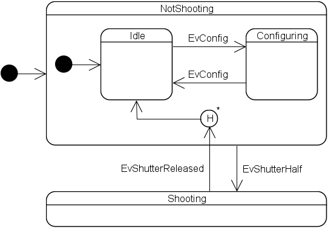
如前所述, Configuring 状态包含一台相当复杂且深度嵌套的内部机器. 自然, 我们希望把先前状态一直恢复到 Configuring 中的 最内层状态, 这就是使用深历史伪状态的原因. 相关代码如下:
// not part of the Camera example
struct NotShooting : sc::simple_state<
NotShooting, Camera, Idle, sc::has_deep_history >
{
// ...
};
// ...
struct Shooting : sc::simple_state< Shooting, Camera, Focusing >
{
typedef sc::transition<
EvShutterRelease, sc::deep_history< Idle > > reactions;
// ...
};
历史分两个阶段: 第一, 当包含历史伪状态的状态退出时, 必须保存先前活动的内层状态层次结构信息. 第二, 之后转换到历史伪状态时, 必须取回保存的状态层次信息并进入相应的状态. 前者通过把 has_shallow_history、has_deep_history 或 has_full_history (它同时结合浅历史与深历史) 作为最后一个参数传给 simple_state 和 state 类模板来表达. 后者通过把 shallow_history<> 或 deep_history<> 指定为转换目标, 或如稍后将看到的, 指定为内层初始状态来表达. 由于可能出现这种情况: 在转换到历史之前, 包含历史伪状态的状态从未被进入过, 所以这两个类模板都要求一个参数, 指定在这种情况下要进入的默认状态.
使用历史所需的冗余会在编译期做一致性检查. 也就是说, 如果我们忘记把 has_deep_history 传给 NotShooting 的基类, 状态机将无法编译.
几位 beta 测试者提交的另一项更改请求说, 希望重新打开相机时, 相机回到关机前的状态. 实现如下:
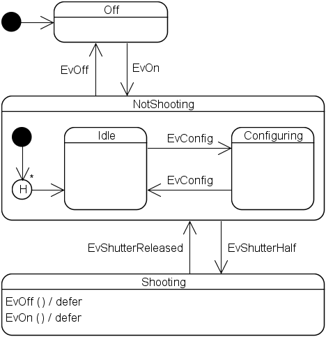
// ...
// not part of the Camera example
struct NotShooting : sc::simple_state< NotShooting, Camera,
mpl::list< sc::deep_history< Idle > >,
sc::has_deep_history >
{
// ...
};
// ...
遗憾的是, 由于一些与模板相关的实现细节, 这里有一个小小的不便: 当内层初始状态是类模板实例化时, 尽管只有一个内层初始状态, 我们也总得把它放进一个 mpl::list<>. 此外, 当前的深历史实现有一些 限制.
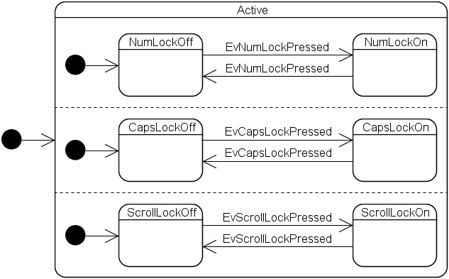
要实现这一状态图, 只需指定不止一个内层初始状态 (见 Keyboard 示例):
struct Active;
struct Keyboard : sc::state_machine< Keyboard, Active > {};
struct NumLockOff;
struct CapsLockOff;
struct ScrollLockOff;
struct Active: sc::simple_state< Active, Keyboard,
mpl::list< NumLockOff, CapsLockOff, ScrollLockOff > > {};
Active 的内层状态必须声明自己属于哪个正交区域:
struct EvNumLockPressed : sc::event< EvNumLockPressed > {};
struct EvCapsLockPressed : sc::event< EvCapsLockPressed > {};
struct EvScrollLockPressed :
sc::event< EvScrollLockPressed > {};
struct NumLockOn : sc::simple_state<
NumLockOn, Active::orthogonal< 0 > >
{
typedef sc::transition<
EvNumLockPressed, NumLockOff > reactions;
};
struct NumLockOff : sc::simple_state<
NumLockOff, Active::orthogonal< 0 > >
{
typedef sc::transition<
EvNumLockPressed, NumLockOn > reactions;
};
struct CapsLockOn : sc::simple_state<
CapsLockOn, Active::orthogonal< 1 > >
{
typedef sc::transition<
EvCapsLockPressed, CapsLockOff > reactions;
};
struct CapsLockOff : sc::simple_state<
CapsLockOff, Active::orthogonal< 1 > >
{
typedef sc::transition<
EvCapsLockPressed, CapsLockOn > reactions;
};
struct ScrollLockOn : sc::simple_state<
ScrollLockOn, Active::orthogonal< 2 > >
{
typedef sc::transition<
EvScrollLockPressed, ScrollLockOff > reactions;
};
struct ScrollLockOff : sc::simple_state<
ScrollLockOff, Active::orthogonal< 2 > >
{
typedef sc::transition<
EvScrollLockPressed, ScrollLockOn > reactions;
};
orthogonal< 0 > 是默认值, 所以 NumLockOn 和 NumLockOff 本可以传 Active 而不是 Active::orthogonal< 0 > 来指定其上下文. 传给 orthogonal 成员模板的编号必须与外层状态中的列表位置对应. 此外, 转换源状态的正交位置必须与目标状态的正交位置对应. 任何违反这些规则的情况都会导致编译期错误. 示例:
// Example 1: does not compile because Active specifies
// only 3 orthogonal regions
struct WhateverLockOn: sc::simple_state<
WhateverLockOn, Active::orthogonal< 3 > > {};
// Example 2: does not compile because Active specifies
// that NumLockOff is part of the "0th" orthogonal region
struct NumLockOff : sc::simple_state<
NumLockOff, Active::orthogonal< 1 > > {};
// Example 3: does not compile because a transition between
// different orthogonal regions is not permitted
struct CapsLockOn : sc::simple_state<
CapsLockOn, Active::orthogonal< 1 > >
{
typedef sc::transition<
EvCapsLockPressed, CapsLockOff > reactions;
};
struct CapsLockOff : sc::simple_state<
CapsLockOff, Active::orthogonal< 2 > >
{
typedef sc::transition<
EvCapsLockPressed, CapsLockOn > reactions;
};
状态机中的反应常常依赖于一个或多个正交区域中的活动状态. 这是因为正交区域并非完全正交, 或者外层状态中的某个反应只有在内层正交区域处于特定状态时才能发生. 为此, state_cast<> 函数 (见 从机器中获取状态信息 一节的介绍) 在状态内部也可用.
举一个有点牵强的例子, 假设我们的 键盘还接受 EvRequestShutdown 事件, 只有当所有锁定键都处于关闭状态时, 收到该事件才使键盘终止. 那么我们将把 Keyboard 状态机修改如下:
struct EvRequestShutdown : sc::event< EvRequestShutdown > {};
struct NumLockOff;
struct CapsLockOff;
struct ScrollLockOff;
struct Active: sc::simple_state< Active, Keyboard,
mpl::list< NumLockOff, CapsLockOff, ScrollLockOff > >
{
typedef sc::custom_reaction< EvRequestShutdown > reactions;
sc::result react( const EvRequestShutdown & )
{
if ( ( state_downcast< const NumLockOff * >() != 0 ) &&
( state_downcast< const CapsLockOff * >() != 0 ) &&
( state_downcast< const ScrollLockOff * >() != 0 ) )
{
return terminate();
}
else
{
return discard_event();
}
}
};
传指针类型而不是引用类型, 会在转换失败时返回 0 指针而不是抛出 std::bad_cast. 另请注意使用 state_downcast<>() 而不是 state_cast<>(). 与 boost::polymorphic_downcast<>() 和 dynamic_cast 之间的差别类似, state_downcast<>() 是 state_cast<>() 的快得多的变体, 且只能在传入类型是最派生类型时使用. 只有当想查询附加基类时才应使用 state_cast<>().
人们常常想确切弄清机器当前处于哪些状态. 在一定程度上, 用 state_cast<>() 和 state_downcast<>() 已经可以做到, 但它们的用途相当有限, 因为二者对 (你处于状态 X 吗?) 这个问题只给出是/否回答. 若传给 state_cast<>() 的是附加基类而不是状态类, 就可以提出更复杂的问题, 但这需要更多工作 (所有状态都要派生自并实现该附加基类), 速度慢 (底层 state_cast<>() 使用 dynamic_cast), 强制项目在开启 C++ RTTI 的情况下编译, 并对状态进入/退出速度有负面影响.
尤其对于调试, 能问出 (你现在处于哪些状态?) 会有用得多. 为此, 可以迭代所有活动的 最内层状态, 用的工具是 state_machine<>::state_begin() 和 state_machine<>::state_end(). 解引用返回的迭代器会得到对所有状态公共基类 const
state_machine<>::state_base_type 的引用. 于是我们可以如下打印当前活动的状态配置 (完整代码见 Keyboard 示例):
void DisplayStateConfiguration( const Keyboard & kbd )
{
char region = 'a';
for (
Keyboard::state_iterator pLeafState = kbd.state_begin();
pLeafState != kbd.state_end(); ++pLeafState )
{
std::cout << "Orthogonal region " << region << ": ";
// The following use of typeid assumes that
// BOOST_STATECHART_USE_NATIVE_RTTI is defined
std::cout << typeid( *pLeafState ).name() << "\n";
++region;
}
}
如有必要, 可以用 state_machine<>::state_base_type::outer_state_ptr() 访问外层状态, 它返回指向 const
state_machine<>::state_base_type 的指针. 在最外层状态上调用时, 该函数直接返回 0.
为了减小可执行文件体积, 有些应用程序必须在关闭 C++ RTTI 的情况下编译. 若非有下面两个函数, 迭代所有活动状态的能力将几乎无用:
static unspecified_type
simple_state<>::static_type()unspecified_type
state_machine<>::state_base_type::dynamic_type() const二者都返回可用 operator==() 和 std::less<> 比较的值. 仅凭这一点就足以实现上面的 DisplayStateConfiguration 函数而无需 typeid 的帮助, 但仍然有些繁琐, 因为必须用一个映射把类型信息值与状态名关联起来.
因此还提供了以下函数 (仅当 BOOST_STATECHART_USE_NATIVE_RTTI 未被定义时可用):
template< class T >
static void simple_state<>::custom_static_type_ptr( const T *
);template< class T >
static const T *
simple_state<>::custom_static_type_ptr();template< class T >
const T * state_machine<>::
state_base_type::custom_dynamic_type_ptr() const;这些函数让我们可以直接把任意状态类型信息与每个状态关联...
// ...
int main()
{
NumLockOn::custom_static_type_ptr( "NumLockOn" );
NumLockOff::custom_static_type_ptr( "NumLockOff" );
CapsLockOn::custom_static_type_ptr( "CapsLockOn" );
CapsLockOff::custom_static_type_ptr( "CapsLockOff" );
ScrollLockOn::custom_static_type_ptr( "ScrollLockOn" );
ScrollLockOff::custom_static_type_ptr( "ScrollLockOff" );
// ...
}
...并如下重写显示函数:
void DisplayStateConfiguration( const Keyboard & kbd )
{
char region = 'a';
for (
Keyboard::state_iterator pLeafState = kbd.state_begin();
pLeafState != kbd.state_end(); ++pLeafState )
{
std::cout << "Orthogonal region " << region << ": ";
std::cout <<
pLeafState->custom_dynamic_type_ptr< char >() << "\n";
++region;
}
}
除状态析构函数外, 异常可以从所有用户代码传播出来. 开箱即用时, 状态机框架配置为简单异常处理, 不捕获任何这类异常, 因此它们立即传播给状态机客户端. state_machine<> 内部的一个 scope guard 确保在客户端捕获异常之前, 所有状态对象都已被析构. 该 scope guard 不会尝试调用状态可能定义的任何 exit 函数 (见下文 两阶段退出), 因为这些函数自身可能抛出其他异常, 从而掩盖原始异常. 因此, 如果状态机要在抛出异常时做一些更合理的处理, 就必须在异常传播进 Boost.Statechart 框架之前捕获它们. 这种异常处理方案常常是合适的, 但在许多动作可能触发需要在状态机内部处理的异常的状态机中, 它会导致相当多的代码重复 (见设计理由中的 错误处理).
这就是为什么异常处理可以通过 ExceptionTranslator 参数 (属于 state_machine 类模板) 来定制. 由于开箱即用的行为是 不转换任何异常, 该参数的默认实参是 null_exception_translator. state_machine<> 子类型可以通过改为指定库提供的 exception_translator<> 来配置为高级异常处理. 这样, 当异常从用户代码传播出来时, 会发生以下情况:
exception_thrown 事件exception_thrown. 也就是说, 队列中可能剩余的事件只有在异常被成功处理后才会分派在异常处理实现有缺陷的平台上, 用户可能想实现自己的 ExceptionTranslator 概念模型 (另见 区分异常).
异常在以下情况下视为处理成功:
exception_thrown 事件的合适反应, 并且第二个条件对下一节的场景 2 和 3 很重要. 在这些场景中, 处理异常时状态机正处于一次转换的中途. 如果反应只是丢弃事件而不做任何其他事, 机器将处于无效状态. 若异常处理未成功, exception_translator<> 会直接重新抛出原始异常. 与简单异常处理一样, 此时 state_machine<> 内部的 scope guard 确保在客户端捕获异常之前, 所有状态对象都已被析构.
exception_thrown 事件作出反应?简答: 若抛出异常时状态机是稳定的, 则首先尝试让引起异常的状态作出反应. 否则, 首先尝试让最外层的 不稳定状态作出反应.
详答: 有三种场景:
react 成员函数在调用任何反应函数 之前传播异常, 或状态内反应期间执行的动作传播异常. 首先尝试让引起异常的状态作出反应, 所以下面的机器在收到 EvStart 事件后会转换到 Defective: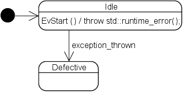
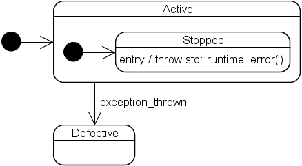

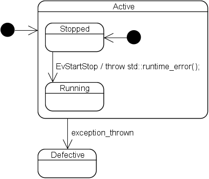
与普通事件一样, 若第一个尝试的状态没有提供反应 (或反应显式返回了 forward_event();), 分派算法会向外移动寻找反应. 然而, 与普通事件不同, 一旦对某个最外层状态尝试失败, 它就会放弃, 所以下面的机器在收到 EvNumLockPressed 事件后 不会转换到 Defective:
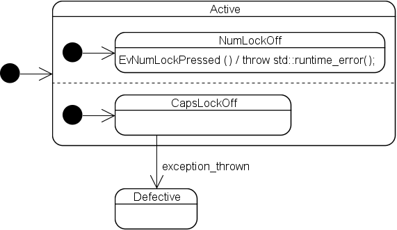
相反, 机器被终止, 原始异常被重新抛出.
由于 exception_thrown 事件是在 catch 块内分派的, 我们可以在自定义反应中重新抛出并捕获该异常:
struct Defective : sc::simple_state<
Defective, Purifier > {};
// Pretend this is a state deeply nested in the Purifier
// state machine
struct Idle : sc::simple_state< Idle, Purifier >
{
typedef mpl::list<
sc::custom_reaction< EvStart >,
sc::custom_reaction< sc::exception_thrown >
> reactions;
sc::result react( const EvStart & )
{
throw std::runtime_error( "" );
}
sc::result react( const sc::exception_thrown & )
{
try
{
throw;
}
catch ( const std::runtime_error & )
{
// only std::runtime_errors will lead to a transition
// to Defective ...
return transit< Defective >();
}
catch ( ... )
{
// ... all other exceptions are forwarded to our outer
// state(s). The state machine is terminated and the
// exception rethrown if the outer state(s) can't
// handle it either...
return forward_event();
}
// Alternatively, if we want to terminate the machine
// immediately, we can also either rethrow or throw
// a different exception.
}
};
遗憾的是, 这一惯用法 (使用 throw; 于某个 try 块内, 该块又嵌套于 catch 块内) 在至少一个非常流行的编译器上行不通. 如果必须使用这类平台, 可以把自定义的异常转换器类传给 state_machine 类模板. 这将允许你根据异常类型生成不同的事件.
若 simple_state<> 或 state<> 子类型声明了一个签名为 void
exit() 的公有成员函数, 则该函数会在状态对象被析构之前调用. 如设计理由的 错误处理一节所解释的, 这对以下两件原本只靠析构函数很难或很麻烦做到的事很有用:
使用 exit() 之前需要考虑的几点:
exit() 会被调用: terminate() 的情况下析构状态机对象, 则当前活动状态会在不调用 exit() 的情况下被析构. 这是必要的, 因为 exit() 可能抛出的异常无法继续传播给状态机客户端exit() 不会被调用, 若先前执行的动作传播了异常且该异常尚未被成功处理. 这是因为 exit() 可能抛出的新异常会掩盖原始异常exit 函数传播了异常, 该状态也被视为已退出. 也就是说, 调用 exit() 之后必然立即析构状态对象, 无论 exit() 是否传播了异常. 因此, 配置为高级异常处理的状态机在处理从 exit 函数传播出的异常期间总是不稳定的exit() 传播出的异常所产生的异常事件, 其处理规则与为从状态构造函数传播出的异常所定义的规则类似. 也就是说, 首先尝试让最外层不稳定状态作出反应, 随后分派器向外移动, 直到找到合适的反应子状态机之于事件驱动编程, 犹如函数之于过程式编程, 是实现常用功能的可复用构件. 相关的 UML 记法我不完全清楚. 它似乎限制重重 (例如, 同一个子状态机不能出现在不同的正交区域中), 而且似乎没有考虑参数之类显而易见的东西.
Boost.Statechart 完全不知道子状态机的存在, 但可以用模板把它们实现得相当漂亮. 这里, 用一个子状态机来改进 正交状态一节讨论的键盘机的复制粘贴式实现:
enum LockType
{
NUM_LOCK,
CAPS_LOCK,
SCROLL_LOCK
};
template< LockType lockType >
struct Off;
struct Active : sc::simple_state<
Active, Keyboard, mpl::list<
Off< NUM_LOCK >, Off< CAPS_LOCK >, Off< SCROLL_LOCK > > > {};
template< LockType lockType >
struct EvPressed : sc::event< EvPressed< lockType > > {};
template< LockType lockType >
struct On : sc::simple_state<
On< lockType >, Active::orthogonal< lockType > >
{
typedef sc::transition<
EvPressed< lockType >, Off< lockType > > reactions;
};
template< LockType lockType >
struct Off : sc::simple_state<
Off< lockType >, Active::orthogonal< lockType > >
{
typedef sc::transition<
EvPressed< lockType >, On< lockType > > reactions;
};
顾名思义, 同步状态机同步处理每个事件. 这一行为由 state_machine 类模板实现, 其 process_event 函数只有在执行完所有反应 (包括动作可能投递的内部事件引发的反应) 后才返回. 该函数严格不可重入 (与所有其他成员函数一样, 所以 state_machine<> 不是线程安全的). 这使得两个 state_machine<> 子类型对象很难通过事件正确地进行双向通信, 即使在单线程程序中也是如此. 例如, 状态机 A 正在处理一个外部事件的中途. 在某个动作中, 它决定向状态机 B 发送一个新事件 (通过调用 B::process_event()). 然后它通过一个 boost::function<> 式的回调等待 B 发回答案, 该回调引用 A::process_event(), 并作为事件的数据成员传入. 然而, 当 A 正在等待 B 发回事件时, A::process_event() 尚未从处理外部事件中返回, 而 B 一旦通过回调应答, A::process_event() 就 不可避免地被重入. 这一切确实都发生在单线程中, 这就是 wait 加引号的原因.
asynchronous_state_machine 类模板没有 state_machine 类模板所具有的那些成员函数. 此外, asynchronous_state_machine<> 子类型对象甚至不能直接创建或销毁. 相反, 所有这些操作都必须通过每个异步状态机关联的 Scheduler 对象来执行. 所有这些 Scheduler 成员函数只是把一个相应条目压入调度器队列, 然后立即返回. 稍后会有一个专门线程把条目从队列弹出并处理.
应用程序通常先创建一个 fifo_scheduler<> 对象, 然后调用 fifo_scheduler<>::create_processor<>() 和 fifo_scheduler<>::initiate_processor() 来调度一个或多个 asynchronous_state_machine<> 子类型对象的创建与启动. 最后, 要么直接调用 fifo_scheduler<>::operator()() 让机器在当前线程中运行, 要么把一个 boost::function<> 对象 (它引用 operator()()) 传给一个新的 boost::thread. 或者, 后一步也可以在构造 fifo_scheduler<> 对象之后立即完成. 在下面的代码中, 我们在一个新的 boost::thread 中运行一个状态机, 另一个在主线程中运行 (完整源代码见 PingPong 示例):
struct Waiting;
struct Player :
sc::asynchronous_state_machine< Player, Waiting >
{
// ...
};
// ...
int main()
{
// Create two schedulers that will wait for new events
// when their event queue runs empty
sc::fifo_scheduler<> scheduler1( true );
sc::fifo_scheduler<> scheduler2( true );
// Each player is serviced by its own scheduler
sc::fifo_scheduler<>::processor_handle player1 =
scheduler1.create_processor< Player >( /* ... */ );
scheduler1.initiate_processor( player1 );
sc::fifo_scheduler<>::processor_handle player2 =
scheduler2.create_processor< Player >( /* ... */ );
scheduler2.initiate_processor( player2 );
// the initial event that will start the game
boost::intrusive_ptr< BallReturned > pInitialBall =
new BallReturned();
// ...
scheduler2.queue_event( player2, pInitialBall );
// ...
// Up until here no state machines exist yet. They
// will be created when operator()() is called
// Run first scheduler in a new thread
boost::thread otherThread( boost::bind(
&sc::fifo_scheduler<>::operator(), &scheduler1, 0 ) );
scheduler2(); // Run second scheduler in this thread
otherThread.join();
return 0;
}
我们同样可以使用两个 boost::threads:
int main()
{
// ...
boost::thread thread1( boost::bind(
&sc::fifo_scheduler<>::operator(), &scheduler1, 0 ) );
boost::thread thread2( boost::bind(
&sc::fifo_scheduler<>::operator(), &scheduler2, 0 ) );
// do something else ...
thread1.join();
thread2.join();
return 0;
}
或者, 在同一线程中运行两台机器:
int main()
{
sc::fifo_scheduler<> scheduler1( true );
sc::fifo_scheduler<>::processor_handle player1 =
scheduler1.create_processor< Player >( /* ... */ );
sc::fifo_scheduler<>::processor_handle player2 =
scheduler1.create_processor< Player >( /* ... */ );
// ...
scheduler1();
return 0;
}
在上面的所有示例中, fifo_scheduler<>::operator()() 都在空事件队列上等待, 只有在调用 fifo_scheduler<>::terminate() 之后才返回. Player 状态机在终止前会在其调度器对象上调用该函数.

修订于 03 December, 2006
版权所有 © 2003-2006 Andreas Huber Dönni
按 Boost 软件许可 1.0 版 (Boost Software License, Version 1.0) 分发. (随附文件 LICENSE_1_0.txt 或复制于 http://www.boost.org/LICENSE_1_0.txt)